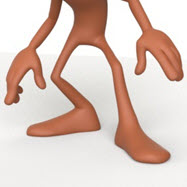

什么是采样？
使用 Arnold 这样的渲染器时，对光线跟踪渲染背后的核心原理有一个基本的了解，会很有帮助。生成虚拟场景的逼真图像需要对场景中从光源到摄影机的光传播进行全程模拟。为了确定每个图像像素的颜色，Arnold 会收集场景几何体、着色器、灯光等信息，并跟踪大量随机的光传输路径（这些路径将通过像素显示的对象连接到光源），该过程即称为“采样”。生成图像的质量很大程度上取决于为每个像素生成的路径数，或采样数。
渲染图像时，Arnold 必须通过检查场景来确定每个像素的颜色值。Arnold 实现这一点的方法是：从摄影机的位置发出多束光线，直至投射到场景中的某个对象。每当光线投射到对象时，都将执行一些计算，最终返回对象的一部分相关信息（例如对象颜色）。此过程基本上可以描述为对虚拟摄影机的图像平面中的像素进行“采样”。
如果每个像素中的采样过少，则计算出的渲染可能会产生噪波。增加每个像素的采样数可以减少图像噪波，从而更好地呈现实际场景。下面的图像显示了在场景中增加摄影机 (AA) 采样数时的比较结果。增加摄影机 (AA) 采样数不仅减少了锯齿噪波，而且还添加了更多的次光线采样，这也会减少照明中的噪波。
 |
|
| 1 倍摄影机 (AA)：1x1=每像素 1 个采样（图像出现噪波） | 6 倍摄影机 (AA)：6x6=36（噪波减少） |
摄影机 (AA) 采样
那么，什么是摄影机采样？基本上，摄影机会通过渲染屏幕窗口的每个所需像素向场景中投射多束光线。这些光线称为“视线”，但有时也称为“目光”或“摄影机光线”（摄影机 (AA)（抗锯齿）），因为它们投射自渲染视图。有时它们会被称为“像素采样”。
摄影机 (AA) 值控制像素超级采样率或从摄影机跟踪的每像素光线数。采样数越多，抗锯齿质量就越高，但渲染时间也越长。
请注意，此过程不是线性的，因为对于其中的每个采样率来说，实际的采样数是输入值的平方。例如，如果摄影机 (AA) 采样数为 3，则意味着 3x3 = 9 个采样将用于抗锯齿。如果漫反射采样数为 2，则 2x2 = 4 个采样将用于漫反射 GI。这同样适用于其他值。
这些摄影机 (AA) 采样可以描述为视线（或像素采样），用于确定所渲染图像的总体质量。增加摄影机 (AA) 采样数可以提高图像的总体质量，但通常会浪费大量开销，因为它会增加所有对象的采样率。当确定了场景中的噪波来源时，更高效的做法是将采样值设置为仅增加那些特定光线的数量。例如，如果有个场景存在大量运动模糊，需要使用更大的摄影机 (AA) 采样，这样可以减小其他采样值。同样，增加摄影机 (AA) 采样也可使间接照明受益，因此不需要太多漫反射采样。但是，如果要减少角色皮肤上的噪波，更高效的做法是使用较高的 SSS 采样数，而不是使用较高的摄影机 (AA) 采样值。
灯光采样
直接照明光线可以描述为处理灯光的光线。这些光线从场景中的一个位置朝向各种光源照射。这些光线可以确定曲面是否位于阴影中，如果不是，则可以计算照明信息。
灯光中的噪波有时可能难以诊断，特别是大型区域光或较大的光。在这些情况下，此类噪波有时可能会被误认为间接漫反射噪波。这就突显出测试不同噪波光线类型的必要性。如果问题在于阴影噪波，那么我们只需在 Arnold 渲染设置中切换忽略阴影，即可彻底消除噪波。下面的图像显示了在 Arnold 中如何跟踪光线。
| 一些光线会照射到对象，而另一些则不会 | Arnold 中的灯光采样 |
使用直接光线和间接光线时，会出现与上文所述相同的噪波问题。直接光源中的噪波通常出现在镜面反射高光或区域光的大范围软阴影中。如果是这种情况，则需要增加灯光采样数。下面的图像显示了将灯光采样数从 1 增加到 3 时的阴影噪波差异。
|  | |
| 1 个灯光采样。噪波很多。 | 3 个灯光采样。噪波减少。 |
尝试计算场景中的噪波时，将各个噪波来源彼此分离会很有用。禁用漫反射光线 (0) 有助于识别存在哪种类型的噪波。如果尝试优化场景中的间接漫反射光线数，而不是增加漫反射光线数（每个漫反射采样的渲染时间将增加一倍），则需要先隔离噪波源。
| 灯光噪波和漫反射噪波（二者很难区分）。 | 漫反射设置为 0（已禁用）。灯光噪波更易于识别。 |
漫反射光线采样
| 来自自发光绿色立方体的间接（漫反射）照明 | 仅直接照明（diffuse_samples：0） |
间接漫反射光线可与对象及其曲面着色器进行交互。因此，光线会沿指定给对象的着色器确定的方向在场景中传播。透射光线穿过对象。光线投射到反射对象（例如镜面）时，只会从接触点沿入射光线确定的方向对一束反射光线进行跟踪。相比之下，对于漫反射光线，会在围绕接触点的半球上对其进行随机采样。
此图显示了在 Arnold 渲染中如何传播漫反射光线
镜面反射光线采样
渲染光泽镜面反射曲面时，可能会与漫反射光线一样产生噪波问题。明亮的聚光区可能会在间接镜面反射采样中产生噪波。例如，对较小且明亮的灯光进行宽镜面反射。如果问题是镜面反射高光中产生了噪波，则需要确认光源是直接灯光，而不是次光线类型（例如镜面反射）。通过将 GI_diffuse_depth 和 GI_specular_depth 设置为零（实质上会禁用所有全局照明）即可轻松进行确认。如果噪波仍然存在，则可以知道这是照明模型的直接镜面反射组件。大多数情况下，这一问题可通过增加镜面反射采样数得以解决。
| 1（采样数不足） | 4（采样数充足，噪波减少） |
体积
对体积进行采样时，直接摄影机 (AA) 光线会在穿过体积对象时对体积进行多次采样。间接光线 (volume_indirect) 与此类似，会在光线“穿”（体积 step_size）过体积对象时进行多次发送。因此，相较于曲面采样，体积采样的计算时间通常更长。
体积采样。直接照明（绿色）。间接照明（蓝色）。
在光线传播的每一步，都会对着色器进行求值并积累体积密度。当这些密度值在整个体积中变得不稳定时，附近的光线可能会计算出明显不同的值，从而在渲染中引入噪波。在这种情况下，可能需要使用更多的灯光体积采样进行渲染或减少体积中的 _step_size_。即使采用较低的采样值，渲染具有体积的清晰图像也可能需要很高成本。
| 灯光 _volume_samples_：1 | 灯光 _volume_samples_：6 |
渲染体积时，需要考虑三点：光线行进、直接灯光和间接灯光采样，所有这些都有不同的采样设置。
步长
光线行进过程中的 step_size*。如果这里使用的采样率过低，体积渲染会遗漏体积中的小细节，从而产生噪波，比应有的形态更薄，或错误估计“实体”体积（如火山云）的精确“曲面”位置。错误 *step_size 将产生雪球效应，在剩余的采样过程中产生更多的噪波。通过查看 Alpha 通道，或在体积中添加一些自发光并禁用所有照明，可以轻松测试是否出现上述问题。如果自发光/Alpha 通道在所需的摄影机 (AA) 设置中出现噪波，则 step_size 可能太大。
| step_size 正确 | step_size 过大时，Alpha 通道中出现瑕疵 |
step_size 实际上采用对象空间单位，而非世界空间单位。因此，缩放体积变换时，采样质量保持不变。但是，应避免使用不合理的大步长。否则，体积会看起来变薄并消散。在下面的示例图像中，体积已放大至 100 个单位以增强此效果（相对于此体积大小的 1/25/50 倍）。
 |
||
| 1 | 25 | 50 |
通常来说，除非出现明显可见的瑕疵，否则需要尽可能增加 step_size。较小的 step_size 将增加渲染时间。例如，如果 step_size 为 0.1，体积为 10 个单位大小（采用世界空间单位），则大约需要 100 个主采样，因此体积着色器会调用 100 次。
直接照明
当 step_size 正确时，噪波可能来自于直接照明或间接照明。直接照明可轻松进行检测。需要关闭间接灯光，如果渲染产生噪波，则需要一次渲染一个灯光，直到找出导致噪波的灯光，然后增加其 _volume_samples_。如果 volume_samples 增加时，直接照明噪波未显著减少，则可能是由于 step_size 过低，或者仅仅是由于灯光交互难以采样（高度各向异性体积、纹理复杂的 mesh_light、二次衰减等）。在这种情况下，只能通过区间限定或过滤消除采样。
间接照明
间接噪波同样易于识别。需要禁用存在噪波的体积的 _GI_volume_depth_，如果渲染时不再出现噪波，则问题在于间接采样。如果需要提高质量，则需增加 volume_indirect_samples 数量。如果增加此值未能减少噪波，则噪波可能还是由于灯光交互难以采样（多次散射、各向异性体积、灯光嵌入体积等），并且如上所述，此时只能通过区间限定或过滤消除采样。
体积光线深度
增加 volume_ray_depth 可以显著改变体积外观。但是，请注意，增加 volume_ray_depth 将增加体积内多次散射反弹的数量（默认设置为 0），因此渲染时间会显著增加。
| 0 | 6 |
有关采样的详细信息，请单击此处。
有关去除噪波的详细信息，请单击此处。
由 Daniel M. Lara 制作的 Pepe 模型 (Pepeland)。